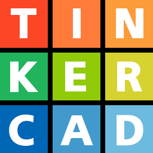
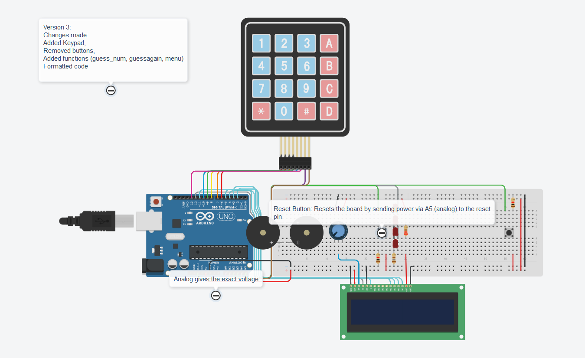

Programming
Below is a list of the programming languages I cuurently use, and their purpose, and why I find interest in them
 Java is a multi-platform, object-oriented, and network-centric language that can be used as a platform in itself.
It is a fast, secure, reliable programming language for coding everything from mobile apps and enterprise software to big data applications and server-side technologies.
Java is a multi-platform, object-oriented, and network-centric language that can be used as a platform in itself.
It is a fast, secure, reliable programming language for coding everything from mobile apps and enterprise software to big data applications and server-side technologies.
What is it used for? 1. Game Development 2. Cloud computing 3. Big Data 4. Artificial Intelligence 5. Internet of Things, etc..
Why do I use it? Java is the main language used by most FRC (Frst Robotics Competition) teams to program robots, and has served us for years. It'a reliable and useful,
and I wouldn't want to switch it to anything, especially not python.
 I used html to make this site. Although I had prior knowledge of HTML, having taken semi-professional training, I have bad momory,
so I had to relearn both HTML, and CSS, as is very evident from my site. HyperText Markup Language (HTML) is the standard markup language for documents designed to be displayed in a web browser. It defines the content and structure of web content.
It is often aided by CSS (Cascading style sheets) and JavaScript, but I refrained from using javascript (except in that one line...) so as not to be distracted by learning,
and forget to utilze my knowledge. HTML is great if you can use it, but markup languages tend to be annoying to the regular non-front-end dev.
I used html to make this site. Although I had prior knowledge of HTML, having taken semi-professional training, I have bad momory,
so I had to relearn both HTML, and CSS, as is very evident from my site. HyperText Markup Language (HTML) is the standard markup language for documents designed to be displayed in a web browser. It defines the content and structure of web content.
It is often aided by CSS (Cascading style sheets) and JavaScript, but I refrained from using javascript (except in that one line...) so as not to be distracted by learning,
and forget to utilze my knowledge. HTML is great if you can use it, but markup languages tend to be annoying to the regular non-front-end dev.
 Cascading Style Sheets (CSS) is a style sheet language used for specifying the presentation and styling of a document written in a markup language such as HTML or
XML (including XML dialects such as SVG, MathML or XHTML), as infered from the above paragraph on HTML.
Cascading Style Sheets (CSS) is a style sheet language used for specifying the presentation and styling of a document written in a markup language such as HTML or
XML (including XML dialects such as SVG, MathML or XHTML), as infered from the above paragraph on HTML.
CSS is hitting your head on a table, it sucks for most people,
but there exists, somewhere out there, sickos' who get pleasure from it.
I wasted quite a lot of time, time I'll never gain back, learning stuff that not only didn't
help me, but set me back. I will say though, if you know how to use it on an expert level, CSS is goated.
 C, C, C, 🙂↕️↕️ the literal goat of OOP.
C, C, C, 🙂↕️↕️ the literal goat of OOP.
What is C? C is a general-purpose programming language created by Dennis Ritchie at the Bell Laboratories in 1972.
It is a very popular language, despite being old. The main reason for its popularity is because it is a fundamental language in the field of computer science.
What am I using it for? CS50.
Arduino
Arduino is an open-source electronics platform based on easy-to-use hardware and software. Arduino boards are able to read
inputs - light on a sensor, a finger on a button, or a Twitter message - and turn it into an output - activating a motor, turning on an LED, publishing something online.
You can tell your board what to do by sending a set of instructions to the microcontroller on the board. To do so you use the Arduino programming language (based on Wiring),
and the Arduino Software (IDE), based on Processing.
It's great.
 As you know, assuming your in Mr. Pagliari'a Grade 10 Computer Technology class, Arduinos are cool, and can be used for a lot of stuff that you don't know about.
Go look up cool projects and be blown away at the creattivity of humans.
As you know, assuming your in Mr. Pagliari'a Grade 10 Computer Technology class, Arduinos are cool, and can be used for a lot of stuff that you don't know about.
Go look up cool projects and be blown away at the creattivity of humans.
My class made several projects using TinkerCad, including the "Knight Rider"and "Traffic LIghts" projects.
I hope to, this summer, get and experiment with arduinos for myself, and build something cool.

Tinkercad is a free-of-charge, online 3D modeling program that runs in a web browser. Since it became available in 2011 it has become a popular platform for creating models for
3D printing as well as an entry-level introduction to constructive solid geometry in schools, but we comp. tech. students use it for building and testing circuits.
Tinkercad has been great so far, and help really helped me understand and build circuits, and I look forward to how it can help me in the future.

Penultimate Greatness:This is a simple project I was working on a little while back that utilizes both an lcd and a keypad. It features multiple modes with different functions, such as "guessing game", "calculator", "keyboard", etc. I used the Keypad and Liquid Crystal libriaries when programming it, and it gave me a little trouble, but i said, "Nah, I'd Win". I called it "Penultimate Greatness" because it was supposed to be my second to last arduino Project in Mr. Pagliari's class, but this website project really said "you sure 'bout that bro"